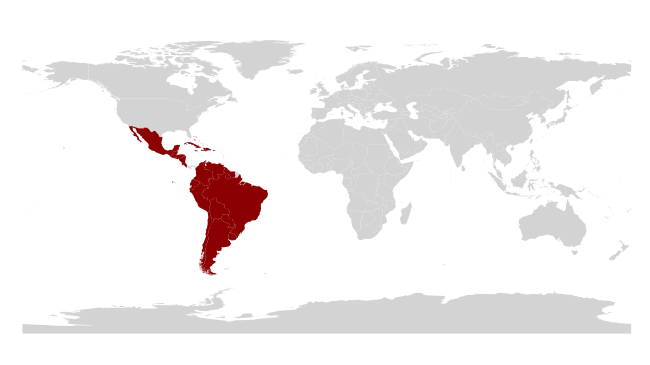
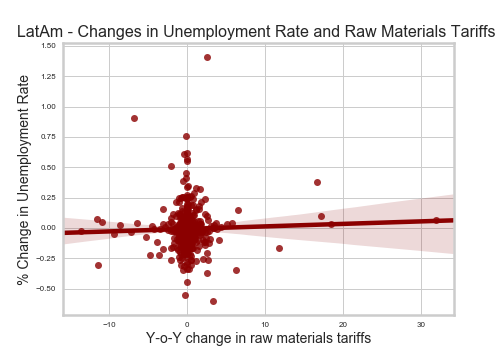

Freer trade theorectically increases a country's income. However, this does not necessarily imply a Pareto improvement, as some jobs may be lost to other countries, and workers are unable to move into other sectors.
Being UChicago students, we hope to see positive relationship, where lower tariffs help to create jobs. However, we acknowledge that imports could cause sectoral changes that take time to repair (e.g. retraining workers for another sector). In this, there is a possibility of an inverse relationship, where reducing tariffs could result in loss of jobs and higher unemployment.
At the high level, we found an almost marginally significant negative relationship between tariff changes and unemployment rates. The negative relationship is echoed in the subcategories (except for raw materials), implying that pockets of the workforce could be hurt as LatAm countries liberalize. The positive relationship between tariffs on raw materials and unemployment rates echo our findings findings from inflation, where LatAm countries are hurt by increasing tariffs.
After sieving out the near-zero observations, we found that there are generally more instances of decreases in unemployment rate than increases. There may be a case to be made that unmployment rate decreases are more closely associated with tariff reductions than increases, particularly for intermediate goods, but this case is weak, at best.

Similar to LatAm countries, we observed negative relationships between unemployment rates and tariff changes. This is seen most strongly in tariffs for capital goods.
For G7 countries, bucketing did not produce any discernible trends.
As before, LatAm countries' economies seemed to be tied more closely with tariffs on raw materials than any other tariffs, and this impact appears to be stronger for LatAm than for G7. We did not observe other relationships that distinguishes sharply LatAm from G7 countires where tariffs and unemployment rates are concerned.